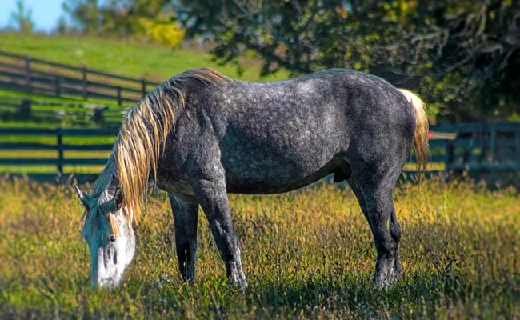

Le Percheron | Recette suggéré

Le Percheron est une race de cheval de trait originaire du Perche, en Normandie. C'est un cheval grand et puissant, reconnaissable à sa musculature développée, son encolure arquée et sa robe généralement grise ou noire. Il possède un caractère calme, docile et généreux. Autrefois utilisé pour les travaux agricoles, le transport et l'attelage, il est aujourd'hui apprécié pour les loisirs, les concours et les travaux forestiers.
C'est un cheval à la fois puissant, généreux et proche de l'homme ! 🐴